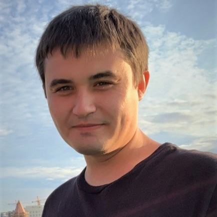

SOFTWARE ENGINEER
Phone: +7 999 610 86 42
Telegram: t.me/ajupov
Email: au073@mail.ru
LinkedIn: linkedin.com/in/usman-ayupov
M.S. COMPUTER SCIENCE
Penza State University
September 2015 - May 2017 / Penza, RU
B.S. COMPUTER SCIENCE
Penza State University
September 2011 - May 2015 / Penza, RU
THE BASICS OF MODERN FACILITATION
Open European Academy of Economics and Politics
September 2019 - November 2019 / Prague, CZ
1C PROGRAMMING
Maxoft LLC
November 2014 - January 2015 / Penza, RU
SYSTEM PROGRAMMING
NTP CRYPTOSOFT LLC
Juny 2012 - July 2012 / Penza, RU
C# NET ASP NET MVC
TypeScript React Redux
MySql PostgreSQL MongoDB Redis
Kafka RabbitMQ
Kibana Grafana Jaeger Prometheus
Docker Kubernetes Clouds
SRE concepts Highload
Agile Scrum Kanban OKR
Development roadmaps
Cost, expectation, risk management
Technical hiring, adaptation, mentoring
Finding win-win solutions
Negotiation and partnership
Reasonable diversity
TECH LEAD
January 2022 - current / Moscow, RU
Making architectures and roadmaps, technical debt management, stakeholder expectations management, communicating the value of refactoring in CVM systems
Implementing processes and practices to improve technical quality in CVM systems
Assistance in developing a bonus system, loyalty program system, personalized marketing automation system
Coordination of development teams of the CVM department, joint development with external agencies and outsourced development
Organizing and facilitating working meetings, conducting 1-1, assessing the level of developers expertise
Participation in hiring, onboarding, team building
SENIOR SOFTWARE ENGINEER
October 2018 - December 2021 / Moscow, RU
Development and refactoring of the bonus system and loyalty program system
Development of a point of sale for cashiers
Development of production interfaces for internal kitchen stations
Development of integrations with cash registers
OUTSOURCED SOFTWARE ENGINEER
October 2018 - March 2019 / Penza, RU
Development of a backoffice of the partner system
Development of integrations with banking systems
SENIOR SOFTWARE ENGINEER
February 2018 - September 2018 / Penza, RU
Development of integrations with banking systems
Development of integrations with Education systems
Development of integrations with EDI systems
MIDDLE SOFTWARE ENGINEER
February 2017 - January 2018 / Penza, RU
Development of a backoffice of the partner system
Development of integrations with CRM systems
Development of integrations with analytics and email communication systems
JUNIOR SOFTWARE ENGINEER
November 2015 - January 2017 / Penza, RU
Development of a backoffice for the outsourced accountants
Development of a billing and tariff system for clients
Development of a reporting system for employees
INTERN SOFTWARE ENGINEER
August 2015 - October 2015 / Penza, RU
Development of a backoffice for employees
Refactoring of the backoffice of the partner system
SOFTWARE ENGINEER / CO-FOUNDER
Aklion - Delivery of sushi, rolls, pizzas
August 2016 - December 2017 / Penza, RU
Development of a client website for accepting orders
Development of a CRM system for kitchen, call center, accounting and couriers employees
Participation in the launch and technical support of the dark kitchen